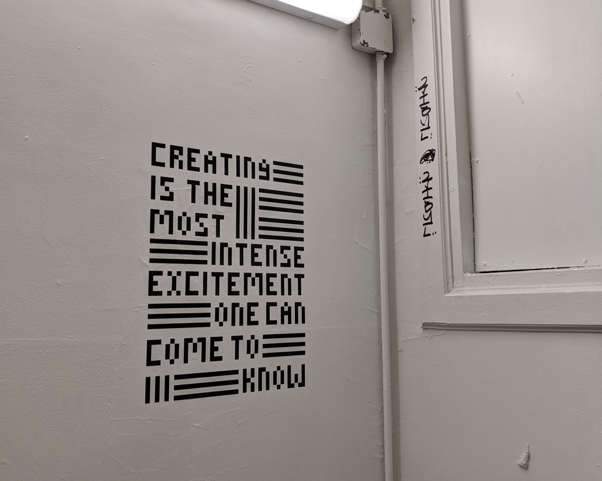
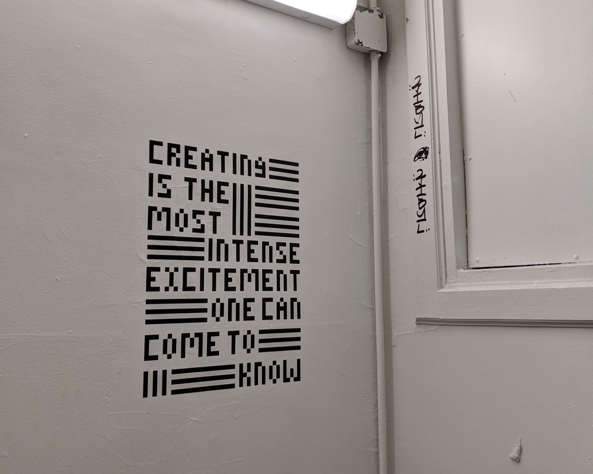

Anni Albers Quote Campaign –
To commemorate the 100 year anniversary of Bauhaus, I created a branded quote campaign featuring quotes from key Bauhaus figures for our final assignment I based my campaign on the quote by textile artist, Anni Albers, "Creating is the most intense excitement one can come to know." The visual identity of the quote was based on the textures and patterns of the textile works of Albers. Red and yellow were utilized to stick to the essence of Bauhaus and its affinity towards the primary colors. The applications pictured above are of a poster, heat-transfer tote bag, stickers, and a vinyl installation in the staircase en route to Parsons’ Making Center.
To commemorate the 100 year anniversary of Bauhaus, I created a branded quote campaign featuring quotes from key Bauhaus figures for our final assignment I based my campaign on the quote by textile artist, Anni Albers, "Creating is the most intense excitement one can come to know." The visual identity of the quote was based on the textures and patterns of the textile works of Albers. Red and yellow were utilized to stick to the essence of Bauhaus and its affinity towards the primary colors. The applications pictured above are of a poster, heat-transfer tote bag, stickers, and a vinyl installation in the staircase en route to Parsons’ Making Center.